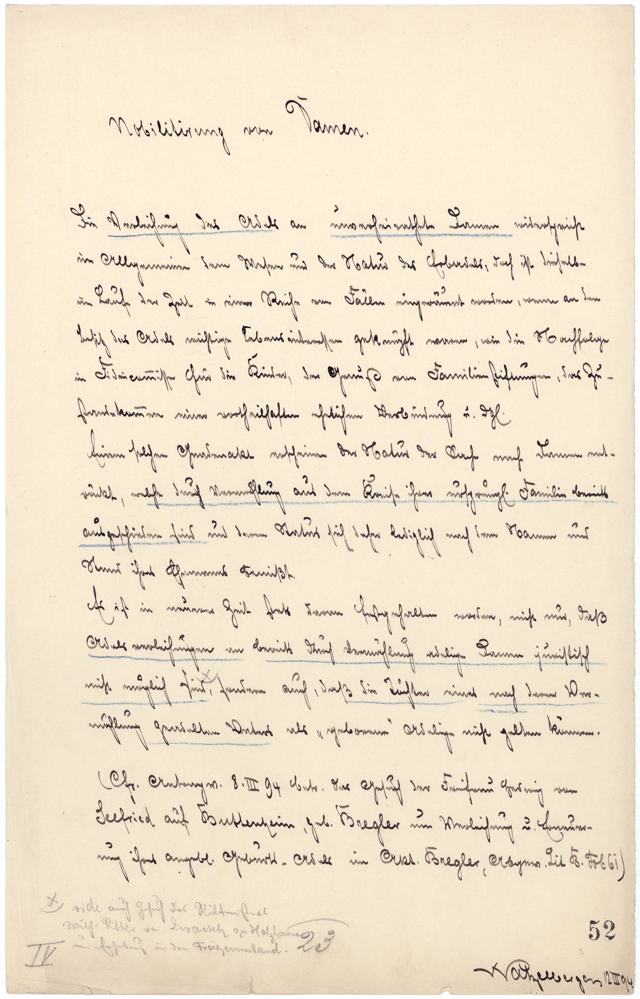

BayHStA, Heroldenamt Akten, 134 (Prod. 52)



Kommentar
BayHStA, Heroldenamt Akten 134 (Prod. 52)
Akt über Grundsätze bei Adelsverleihungen1894 März 12 ()
Akt über Grundsätze bei Adelsverleihungen1894 März 12 ()
Archivaliengattung: Archivaliengattung
Schwierigkeitsgrad: mittel
Schreiberhände:
- Watzelberger (S1)
- Nummerierungen des Blattes (S2)
Diese Aufzeichnungen des Heraldikers Otto Watzelbergers über die Nobilitierung von Damen liegen einem Akt des königlich-bayerischen Reichsheroldenamts über die Grundsätze bei Adelsverleihungen (Laufzeit 1821–1914) bei.
Watzelberger schreibt eine linksgeneigte Kurrentschrift, für Namen und einzelne lateinische Begriffe verwendet er humanistische Kursive. Diakritische Zeichen und Umlaut-Striche (über u) sind nicht klar zu unterscheiden (vgl. Z. 2: und und Z. 5: geknüpft).
Während ein l-förmiges Zeichen mit unter die Zeile gezogenem Abstrich in früheren Zeiten häufig als Kürzungszeichen zu lesen ist, handelt es sich in Z. 7: d(er)gl(eichen), Z. 9: ursprüngl(ichen) und Z. 18: angebl(ichen) den heutigen Gepflogenheiten entsprechend um den Buchstaben, der nachfolgende Punkt zeigt die Kürzung an.
Bestimmte Textpassagen sind mit blauem Buntstift unterstrichen.
Watzelberger schreibt eine linksgeneigte Kurrentschrift, für Namen und einzelne lateinische Begriffe verwendet er humanistische Kursive. Diakritische Zeichen und Umlaut-Striche (über u) sind nicht klar zu unterscheiden (vgl. Z. 2: und und Z. 5: geknüpft).
Während ein l-förmiges Zeichen mit unter die Zeile gezogenem Abstrich in früheren Zeiten häufig als Kürzungszeichen zu lesen ist, handelt es sich in Z. 7: d(er)gl(eichen), Z. 9: ursprüngl(ichen) und Z. 18: angebl(ichen) den heutigen Gepflogenheiten entsprechend um den Buchstaben, der nachfolgende Punkt zeigt die Kürzung an.
Bestimmte Textpassagen sind mit blauem Buntstift unterstrichen.
Entzifferung
(Absatz Beginn)
1 (Watzelberger:) Nobilitirung(Wechsel des Schriftsystems) von Damen(Wechsel des Schriftsystems).
2 Die Verleihung des Adels an unverheirathete Damen widerspricht
3 im Allgemeinen dem Wesen und der Natur des Erbadels, doch ist dieselbe
4 im Lauf der Zeit in einer Reihe von Fällen eingeräumt worden, wenn an den
5 Besitz des Adels wichtige Lebensinteressen geknüpft waren, wie die Nachfolge
6 in Fideicom(m)isse für die Kinder, der Genuß von Familienstiftungen, das Zu-
7 standekom(m)en einer vortheilhaften ehelichen Verbindung u(nd) d(er)gl(eichen).
8 Einem solchen Gnadenakt erscheinen der Natur der Sache nach Damen ent-
9 rückt, welche durch Vermählunga) aus dem Kreise ihrer ursprüngl(ichen) Familie bereits
10 ausgeschieden sind und deren Status sich daher lediglich nach dem Namen und
11 Stand ihres Ehemanns bemißt.
12 Es ist in neuerer Zeit stets daran festgehalten worden, nicht nur, daß
13 Adelsverleihungen an bereits durch Vermählung adelige Damen juristisch
14 nicht möglich sindx), sondern auch, daß die Töchter eines nach deren Ver-
15 mählung geadelten Vaters als „geborene“ Adelige nicht gelten können.
16 (C(on)f(e)r(Wechsel des Schriftsystems) Antrag v(om) 8. III. [18]94 betr(effend) das Gesuch der Freifrau Hedwig von
17 Seefried(Wechsel des Schriftsystems) auf Buttenheim(Wechsel des Schriftsystems), geb(orene) Bregler(Wechsel des Schriftsystems) um Verleihung v(nd) Erneuer-
18 ung ihres angebl(ichen) Geburts-Adels im Akt Bregler(Wechsel des Schriftsystems), Abgew(ickelt) Lit(era) B. Fol(io)(Wechsel des Schriftsystems) 61)
19 x)vide(Wechsel des Schriftsystems) auch Gesuch des Rittmeisters
20 Wilh(elm) Ritter(Wechsel des Schriftsystems) von Zwackh(Wechsel des Schriftsystems) zu Holzhausen(Wechsel des Schriftsystems)
21 um Erhebung in den Freiherrnstand.
22 (Nummerierungen des Blattes:) IV2352
23 (Watzelberger:) Watzelberger(Wechsel des Schriftsystems) 12 III 94
(Absatz Ende)
a) die Strichlein über dem "ä"(Textzitat) in "Vermählung"(Textzitat) sind so mit dem nachfolgenden "h"(Textzitat) verbunden, dass die Buchstaben schwer zu erkennen sind (vgl. gleiches Wort in Z. 13)
Transkription
(Absatz Beginn)
1 (Watzelberger:) Nobilitirung(Wechsel des Schriftsystems) von Damen(Wechsel des Schriftsystems).
2 Die Verleihung des Adels an unverheirathete Damen widerspricht
3 im Allgemeinen dem Wesen und der Natur des Erbadels, doch ist dieselbe
4 im Lauf der Zeit in einer Reihe von Fällen eingeräumt worden, wenn an den
5 Besitz des Adels wichtige Lebensinteressen geknüpft waren, wie die Nachfolge
6 in Fideicommisse für die Kinder, der Genuß von Familienstiftungen, das Zu-
7 standekommen einer vortheilhaften ehelichen Verbindung und dergleichen.
8 Einem solchen Gnadenakt erscheinen der Natur der Sache nach Damen ent-
9 rückt, welche durch Vermählunga) aus dem Kreise ihrer ursprünglichen Familie bereits
10 ausgeschieden sind und deren Status sich daher lediglich nach dem Namen und
11 Stand ihres Ehemanns bemißt.
12 Es ist in neuerer Zeit stets daran festgehalten worden, nicht nur, daß
13 Adelsverleihungen an bereits durch Vermählung adelige Damen juristisch
14 nicht möglich sind (vide(Wechsel des Schriftsystems) auch Gesuch des Rittmeisters
15 Wilhelm Ritter(Wechsel des Schriftsystems) von Zwackh(Wechsel des Schriftsystems) zu Holzhausen(Wechsel des Schriftsystems)
16 um Erhebung in den Freiherrnstand)b), sondern auch, daß die Töchter eines nach deren Ver-
17 mählung geadelten Vaters als „geborene“ Adelige nicht gelten können.
18 (Confer(Wechsel des Schriftsystems) Antrag vom 8. III. [18]94 betreffend das Gesuch der Freifrau Hedwig von
19 Seefried(Wechsel des Schriftsystems) auf Buttenheim(Wechsel des Schriftsystems), geborene Bregler(Wechsel des Schriftsystems), um Verleihung und Erneuer-
20 ung ihres angeblichen Geburtsadels im Akt Bregler(Wechsel des Schriftsystems), abgewickelt Litera B., Folio(Wechsel des Schriftsystems) 61.)
21 (Nummerierungen des Blattes:) IV 23 2
22 (Watzelberger:) Watzelberger(Wechsel des Schriftsystems) 12. III. [18]94
(Absatz Ende)
a) die Strichlein über dem "ä"(Textzitat) in "Vermählung"(Textzitat) sind so mit dem nachfolgenden "h"(Textzitat) verbunden, dass die Buchstaben schwer zu erkennen sind (vgl. gleiches Wort in Z. 13)
b) drei Zeilen: "vide auch Gesuch […] in den Freiherrenstand"(Textzitat) am unteren Blattrand (ohne Klammern) mit Bleistift nachgetragen, mit Einfügungszeichen: " x)"(Textzitat)